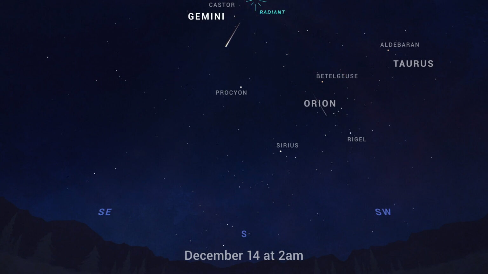
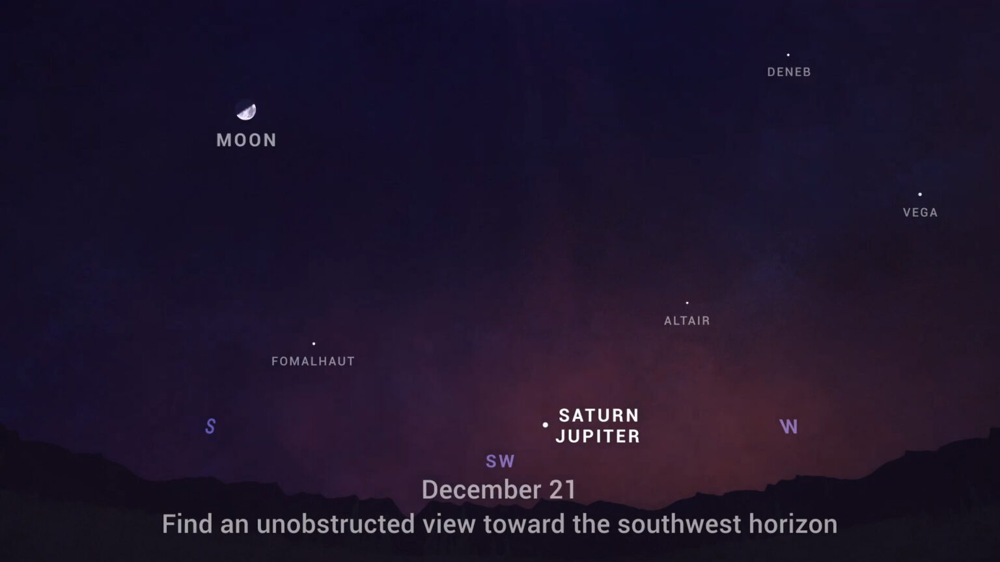
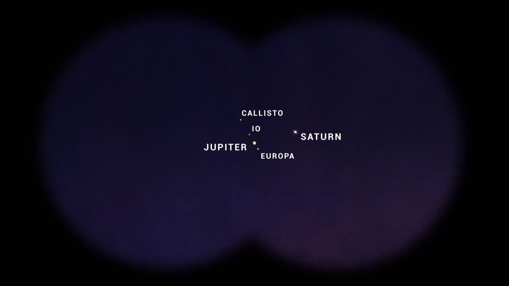
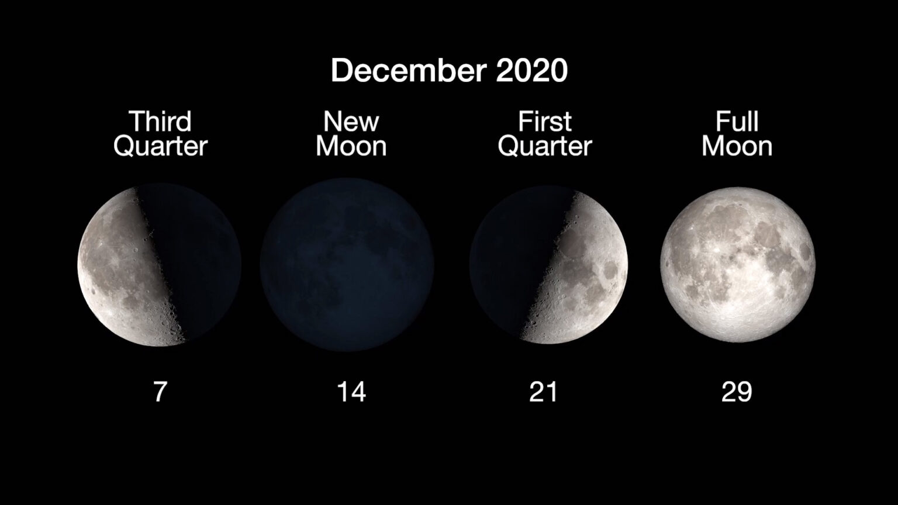

十二月的天空会发生什么？一场流星雨，一场木星和土星之间的罕见的近距离接触，还有冬至。
12月带来了每年最可靠的流星雨之一，也是2020年最好的流星雨之一——双子座流星雨。这场流星雨从12月4日到17日非常活跃，因为地球在小行星法厄同3200轨道上留下的尘埃碎片的痕迹中穿行。这可能是一颗被烧毁的彗星。
双子座流星雨大多数年份都能产生大量的流星，但今年的流星雨更甚。因为流星雨的高峰期正好赶上新月的到来，因此天空变得更暗，没有月光来干扰较暗的流星，双子座流星雨在12月13日夜间至14日早晨达到高峰，前后几天都能看到一些流星活动。北半球整夜都可以观看，当地时间凌晨2点左右最活跃，而对于南半球的观众来说则是在午夜之后观看。
为了获得最佳的观赏效果，找一个远离城市灯光的安全地点，平躺在地上，双脚指向南方，双脚朝南，然后抬头往天空上看。流星可以出现在天空的任何地方，不过，它们看起来像是从双子座附近放射出来。所以，在这里愿你的天空晴朗，看到流星。
木星和土星一整年都在一起穿越天空，但这个月，准备好让它们真正上演一出好戏吧。在12月的前三周，每天晚上观看这两颗行星在天空中的距离比它们20年来的距离都要近。在日落后的一小时内，在西南部寻找它们，而在12月21日，两颗巨大的行星将相距仅十分之一度，这大约是一枚一角硬币的厚度。这意味着这两颗行星和它们的卫星，可以通过双筒望远镜或小型望远镜在同一视野中看到。实际上，土星看起来会像木星的卫星一样靠近木星。
这一事件被称为“伟大的合相”。这种现象在本世纪每20年发生一次，因为地球、木星和土星的轨道周期性地排成一条直线，使得这两颗外行星在我们的夜空中显得很近。即便如此，这也是木星和土星在接下来的60年里最伟大的合相，这两颗行星直到2080年才在天空中如此近距离出现。
21日也是冬至点，北半球是冬至，南半球是夏至。在冬至点这一天，无论你身在地球的哪个角落，太阳都会到达它在天空中最南端的位置。
在北半球，太阳在这一天以最低、最短的路径穿过天空。因此，在北方，冬至带来了一年中日照时间最短的一天。现在，太阳在天空中一年四季的高度变化是由地球围绕我们的恒星公转时的倾斜引起的。这种倾斜使得每个半球接收到的太阳光在每年的季节周期中上下波动。
这是十二月的月相。
你可以在NASA.gov网站上了解所有NASA探索太阳系和太阳系以外的任务。我是来自美国宇航局喷气推进实验室的普雷斯顿·戴奇斯，这就是这个月的天象。
参考来源：
https://solarsystem.nasa.gov/whats-up-skywatching-tips-from-nasa/